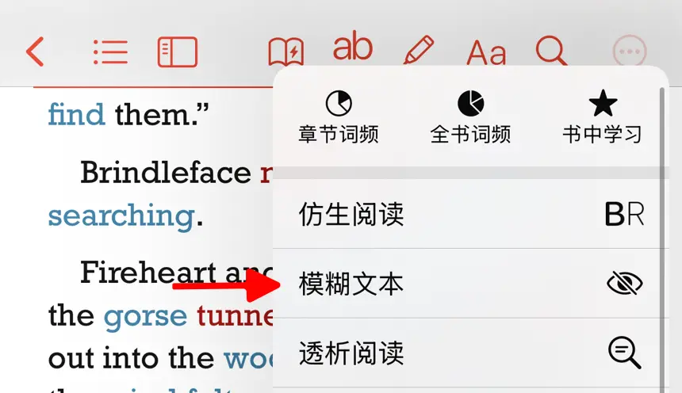

The Blur Text feature allows users to obscure text in an e-book, making it ideal for sentence-by-sentence listening and repetition exercises in English learning.

Limitations
- This feature is only available for text-based books.
- PDF files are not supported.
How to Enable
To enable the Blur Text feature, follow these steps:
- Open the e-book you want to read.
- Tap the icon in the navigation bar to access the Blur Text settings. If the icon is not visible, tap the button, then select Blur Text.
 - Toggle the switch to On to activate the Blur Text feature. Once enabled, tap the blurred text to reveal the complete sentence.
Settings and Options
- Automatically Show Sentence After Playback: When enabled, the sentence text will be revealed automatically after playback.
- Tap to Restore Blur: When enabled, tapping the sentence text will toggle between blurred and visible modes.
- Blur Radius: Adjust the intensity of the blur effect. Higher values result in more blurred text.
Use Cases
The Blur Text feature can be used for the following English learning exercises.
Sentence-by-Sentence Listening Practice
Using the Blur Text feature for sentence-by-sentence listening is an effective way to train listening skills. Follow these steps to practice:
-
Enable the Blur Text Feature
Activate the Blur Text feature to obscure each sentence in the text. -
First Listening Attempt
Play the audio and try to grasp the main idea. At this stage, the text remains blurred, requiring you to rely on listening comprehension to infer the missing content. This step helps improve listening inference and contextual understanding skills. -
Reveal the Sentence Text
After listening to a sentence, tap the corresponding blurred area to display the full text. Compare the audio with the text to check your understanding. If certain parts are unclear, replay the sentence multiple times until you fully grasp its meaning. -
Replay and Reinforce
Replay the audio, focusing on pronunciation, intonation, and connected speech. Use the Tap to Restore Blur function to practice repeatedly until you fully understand each sentence.